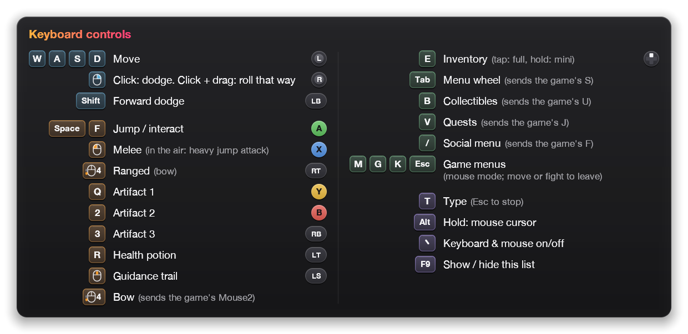

wasdmod for Minecraft Dungeons II
wasdmod for Minecraft Dungeons II
Goodbye, click‑to‑move.
WASD, mouse and keyboard, played as a controller.
Move like you mean it.
Free · Open source · Version 1.5.1
On keyboard and mouse, Minecraft Dungeons II has you click where to walk. wasdmod gives you the controller moveset instead: smooth movement in every direction, dodges, artifacts and the menu wheel, on the keys you already know.
Menus, the cursor and chat still work with the mouse.
Try it
Press W to play.
WASD to moveClick to attackQ23 for skillsSpace to jump
Hold right‑click and drag: you roll that way.
That’s the Recommended layout. In the Official layout, R or side button 4 rolls, right‑click aims the bow and skills are on 1 2 3. Switch layouts in the demo to try both.
This little playground was made for this page. In the game, the same keys do the same moves.
Highlights
Key layout editor
Choose what every key does.
One screen lists every action with its keys and the game’s own key, and a keyboard map shows what each key does.

- Pick a layout. The Official layout, Recommended or one of your own.
- Change a key. Click + key, then press the key you want. × takes one off.
- Keyboard map. Every key in the colour of what it does: movement, actions, menus and the mod’s own keys.
- Install/Apply Layout. A running game switches to the new layout within a second.
In game
Forgot a key? Press F9.
Your layout appears over the game: every key, what it does and the controller button behind it. It shows for a moment when a new layout arrives, and it follows the game’s language.

Controls
Pick a layout, then make it yours.
The Official layout plays the game’s own keys as a controller, and Recommended is the author’s layout. Drag actions between keys to change either one, then export the result for the app.
Every action and option: Controls on GitHub
Install
Install it in four steps.
- 1
Close the game, run wasdmod.
Open wasdmod‑1.5.1.exe. Its window is the key layout editor.
- 2
If Windows warns you.
“Windows protected your PC”: click More info → Run anyway. The app isn’t code‑signed yet.2
- 3
Click Install Mod.
It’s at the top right. wasdmod finds the game in Steam or XboxGames by itself. If it doesn’t, open Game folder → Choose game folder… and pick
Dungeons‑Win64‑Shipping.exeorDungeons‑WinGDK‑Shipping.exe. - 4
Start the game.
For another layout, pick the Official layout or Recommended under Layout and click Install/Apply Layout.

- 1
Get the game running in CrossOver.
MCD2 Crossover sets that up, including Steam start‑up and Microsoft sign‑in.
- 2
Drag wasdmod into Applications.
Open wasdmod‑1.5.1.dmg and drag the app across.
- 3
Open it.
If macOS blocks it: System Settings → Privacy & Security → Open Anyway.
- 4
Quit the game, then click Install Mod.
It’s at the top right of the window. Then start the game. Install Mod also sets up CrossOver for wasdmod, for Dungeons II only.

- 1
Unzip wasdmod‑1.5.1.zip.
The game must already run under Proton: start it once first. On a Steam Deck, switch to Desktop Mode.
- 2
Start wasdmod‑linux.sh.
Double‑click it and choose to run it, or enter
./wasdmod‑linux.shin a terminal. It needs Python 3, which the Steam Deck and most Linux systems have. - 3
Click Install Mod.
The key layout editor opens in your browser and looks for the game in Steam’s libraries. Quit the game, then click Install Mod at the top right. If the game isn’t found, open Game folder → Choose game folder… first.
- 4
Start the game.
Install Mod sets up Proton to load the mod, for this game only. If it can’t do that safely, the editor shows a launch option. In Steam, right‑click the game → Properties → Launch Options, and paste it:
- xinput1_4.dllthe mod
- default.txtOfficial layout
- author.txtRecommended layout
Launch Options
WINEDLLOVERRIDES="xinput1_4=n,b" %command%
Release notes and older versions: All versions on GitHub
- 16languages, the same as the game
- 0game files changed
- 1file, next to the game
- <1sto switch layouts mid‑game
- Freeand open source
Tech specs
- Game
Minecraft Dungeons II
Windows: the Steam, Minecraft Launcher and Xbox app versions. Mac and Linux: the Steam version.
- Windows
One app: the key layout editor, with Install Mod, Disable and Uninstall
wasdmod‑1.5.1.exe · about 1.8 MB · not code‑signed yet2 · without the exe:
wasdmod‑windows.cmdin the zip- Mac
macOS 11 or later · Apple silicon and Intel
The game runs in CrossOver (set up with MCD2 Crossover). wasdmod‑1.5.1.dmg · about 2.5 MB
- Linux & Steam Deck
Proton · untested1
wasdmod‑1.5.1.zip · about 440 KB · start
wasdmod‑linux.sh(needs Python 3), or copy the files by hand- Layouts
Official layout, Recommended and your own
Edit them in the key layout editor. Click Install/Apply Layout and a running game switches to the layout within a second.
- Updates
One click in the Windows and Mac apps
Update now replaces the app, then updates the mod in the game. The zip’s scripts only tell you about a new version. The Nexus Mods downloads don’t go online: update them on Nexus.
- Languages
16
English, Deutsch, Español, Français, Italiano, Nederlands, Polski, Português (Brasil), Svenska, Türkçe, Русский, Українська, 日本語, 한국어, 简体中文, 繁體中文
- Price & licence
Free · MIT licence
Source code on GitHub.
- Privacy
Collects nothing
No accounts, analytics or tracking. Privacy policy
Common questions
Does it change the game?
The game’s files stay as they are; wasdmod only adds its own file next to them. It reads your keyboard and mouse and presents them as an Xbox controller. Steam’s “Verify integrity of game files” doesn’t touch it. wasdmod changes the game’s own keyboard settings only when you click Change them for me in the key layout editor, which sets them to match your layout.
Can I still use a real controller?
Yes. Real controllers keep working alongside it.
How do I roll in a direction?
Click the dodge button to dodge the way you’re moving. Hold it and drag the mouse, and you roll the way you drag. The dodge button is right‑click in the Recommended layout, and R or side button 4 in the Official layout.
Why does Windows or my antivirus warn about it?
The exe isn’t code‑signed yet, and a program that reads the keyboard and presses controller buttons looks like other input tools. On “Windows protected your PC”, click More info → Run anyway. If your antivirus removes a file, restore it and allow it. The zip does what the exe does with a plain script you can read, wasdmod‑windows.cmd. Windows asks once before it runs (“The publisher could not be verified”): click Run. wasdmod is open source, so you can also build it yourself.
Which versions of the game work?
On Windows, the Steam, Minecraft Launcher and Xbox app versions. On a Mac or Linux, the Steam version, set up with MCD2 Crossover on a Mac or Proton on Linux. On Windows, the app, the editor and the in‑game overlays were tested on Windows 11 in a virtual machine, and a player has reported playing the Steam version on Windows, installed from the zip. The Minecraft Launcher and Xbox app version hasn’t been tried. Linux and Steam Deck are untested.
Which languages?
The same 16 as the game: English, Deutsch, Español, Français, Italiano, Nederlands, Polski, Português (Brasil), Svenska, Türkçe, Русский, Українська, 日本語, 한국어, 简体中文 and 繁體中文. The in‑game key list follows the game’s language.
How do I turn it off or remove it?
In a running game, press backtick (`) to turn it off and on. In the app, Disable keeps your layouts and starts the game without wasdmod until you click Enable; Uninstall removes it for good. With the zip, start its script again and use the same buttons.
Something doesn’t work. Where do I report it?
Click Record logs under Troubleshooting, at the end of the window, play until it happens, then Stop and save logs and attach the file to an issue on GitHub. Nothing you type is recorded.